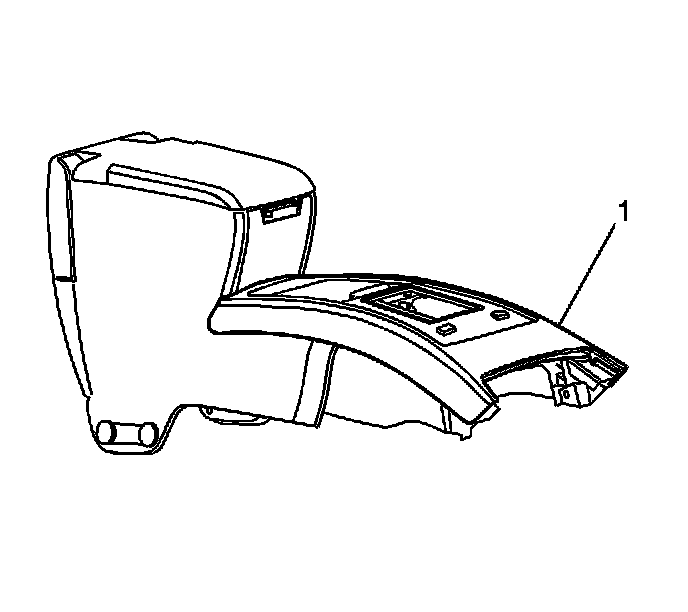
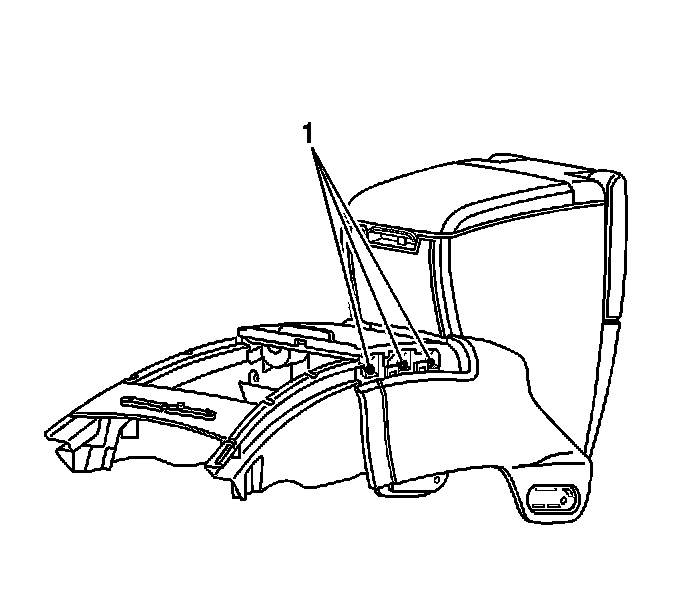

Front Floor Console Cup Holder Replacement
Front Floor Console Cup Holder Replacement
Removal Procedure

1. Remove the center console. Refer to Front Floor Console Replacement (Left Hand Drive) (Service and Repair)Front Floor Console Replacement (Right Hand Drive) (Service and Repair) .
2. Remove the top trim (1).

3. Remove the 6 retaining screws on the cup holder (1).
4. Remove the cup holder (1) from the console.
Installation Procedure
1. Install the cup holder (1) onto the console.
Notice: Refer to Fastener Notice (Fastener Notice) .
2. Install the 6 retaining screws to the cup holder (1) securing it to the console.
Tighten the screws to 2 N.m (9 lb in).
3. Install the top trim (1).
4. Install the center console. Refer to Front Floor Console Replacement (Left Hand Drive) (Service and Repair)Front Floor Console Replacement (Right Hand Drive) (Service and Repair) .